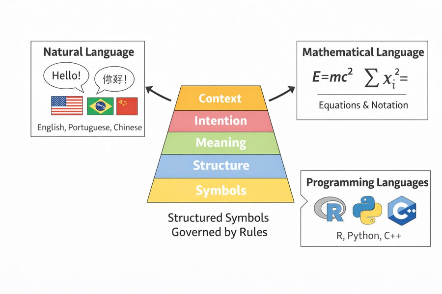

| Carattere | Punto di codice | Byte UTF-8 |
|---|---|---|
| T | U+0054 (84) | 54 |
| o | U+006F (111) | 6F |
| m | U+006D (109) | 6D |
| á | U+00E1 (225) | C3 A1 |
| s | U+0073 (115) | 73 |
15 Il testo come dato
Ecco cinque brevi frasi tratte da lettere di dimissione, scritte in inglese come tutte le note di questo capitolo. In ciascuna, il paziente ha l’eruzione cutanea (rash) — presente — oppure l’eruzione è negata o assente — assente? Prova a indovinare: alla fine del capitolo avrai costruito un piccolo programma che risponde alla stessa domanda, e saprai dove sbaglia.
| Frase | L'eruzione è… |
|---|---|
| "Itchy rash on both forearms after vancomycin." (Eruzione pruriginosa su entrambi gli avambracci dopo la vancomicina.) | |
| "No rash." (Nessuna eruzione.) | |
| "Denies itching or rash." (Nega prurito o eruzione.) | |
| "No fever but a new rash on the trunk." (Niente febbre, ma una nuova eruzione sul tronco.) | |
| "No increase in rash since yesterday." (L'eruzione non è aumentata da ieri.) |
Come usare questo capitolo
Inizi da qui?
Questo capitolo prende in prestito alcune idee dai capitoli precedenti. In breve:
- Istanze, variabili e la suddivisione addestramento/test (Definizione 1.7, Sezione 1.8). Un dataset ha una riga per istanza e una colonna per variabile; un modello viene costruito su un insieme di addestramento e giudicato su un insieme di test che non ha mai visto. Qui ogni documento è un’istanza, e ogni nota del Reparto 7 e di ONCO-1 segue la suddivisione del proprio paziente, la stessa usata in tutto il libro (Capitolo 3).
- Sensibilità, specificità e valori predittivi (Capitolo 2). La sensibilità è la quota di casi veri che un test individua; la specificità la quota di non-casi che lascia correttamente da parte; il valore predittivo positivo (VPP) la quota di casi segnalati che sono reali.
- Regressione logistica, ROC/AUC e soglie (Capitolo 5). Un modello logistico trasforma le variabili in una probabilità \(\hat p\); l’area sotto la curva ROC (AUC) misura quanto bene ordina i casi sopra i non-casi; una soglia \(t\) trasforma \(\hat p\) in un’azione, e la soglia migliore deriva dai danni dei due errori, \(t^{*} = C_{\text{FP}}/(C_{\text{FP}}+C_{\text{FN}})\). Le penalità ridge (Capitolo 4) impediscono a un modello con molte variabili di andare in sovradattamento.
- Similarità del coseno (Capitolo 10). Due profili si confrontano in base all’angolo tra loro, non alla loro lunghezza: un profilo e lo stesso profilo raddoppiato hanno similarità del coseno 1.
| Esempio | Chi o che cosa | Esito | Volti che incontrerai |
|---|---|---|---|
| 1 Terapia intensiva del Reparto 7 | 1.250 pazienti di terapia intensiva in 4 ospedali | variazione della creatinina in 48 h (danno renale acuto se ≥ 0,3 mg/dL) | Aoife (71 anni, sepsi, rischio borderline), Tomás (54 anni, rischio basso), Priya (38 anni, rischio alto); la dott.ssa Emma Walsh; Seán, il farmacista |
| 2 Studio ONCO-1 | 1.000 pazienti randomizzati a ricevere o meno la chemioterapia | riduzione del tumore (%) | i pazienti #0042 e #0917 |
| 3 HomeBeat | 500 persone che indossano uno smartwatch a casa | punteggio di stress, evento di peggioramento | Lena |
| 4 CellWorks | 420 lotti di produzione di una terapia cellulare | punteggio di potenza | il lotto CW-118 |
Tutti e quattro i dataset sono simulati e si possono scaricare dall’appendice sui dati. La presentazione completa si trova in Sezione 1.1.
Questo capitolo porta il testo dai caratteri ai vettori e si chiude con un classificatore che vaglia le note cliniche. Comprende dodici sezioni e un Laboratorio, sette verifiche rapide, quattro widget “Prova tu”, una sfida e tre missioni di programmazione in R e Python. Calcola circa due ore. Ogni nota, segnalazione e frase di foglietto illustrativo che vi compare è sintetica: inventata a partire da modelli di frase da uno script, senza descrivere alcuna persona reale né copiare alcun documento reale. Poiché i dati sono in inglese, anche gli esempi di testo, i pattern e le interrogazioni restano in inglese; quando serve, una traduzione compare tra parentesi.
La notazione in sintesi (solo per consultazione)
| Simbolo | Significato | Sezione |
|---|---|---|
| \(w_t\) | il token in posizione \(t\) di un testo | Sezione 15.5 |
| \(\mathcal{V}\), \(\lvert\mathcal{V}\rvert\) | vocabolario (l’insieme dei token distinti) e la sua dimensione | Sezione 15.5 |
| \(n\) | numero di documenti di una collezione (i documenti sono le istanze) | Sezione 15.8 |
| \(\text{tf}(w, i)\) | frequenza del termine: quante volte il token \(w\) compare nel documento \(i\) | Sezione 15.8 |
| \(\text{df}(w)\), \(\text{idf}(w)\) | frequenza di documento di \(w\) e la sua frequenza inversa di documento \(\log(n/\text{df}(w))\) | Sezione 15.8 |
| \(\mathbf{x}_i\) | il vettore del documento \(i\) (conteggi o pesi TF-IDF, un elemento per parola del vocabolario) | Sezione 15.7 |
| \(\cos(\mathbf{x}_i, \mathbf{x}_{i'})\) | similarità del coseno tra due documenti | Sezione 15.9 |
| \(\hat p\) | la probabilità, secondo un classificatore, che una nota riporti una sospetta reazione avversa da farmaco | Sezione 15.10 |
| \(t_{\text{low}}\), \(t_{\text{high}}\) | le due soglie di una coda di revisione | Sezione 15.11 |
L’elenco completo è nella pagina della notazione.
15.1 Il linguaggio è fatto di simboli; i computer hanno bisogno di numeri
Usiamo il linguaggio molto prima di saperlo descrivere. Le lingue naturali come l’inglese, il portoghese o il cinese, il linguaggio matematico delle equazioni e i linguaggi di programmazione di questo libro, R e Python, sembrano molto diversi, ma hanno una proprietà in comune: codificano informazione in simboli governati da regole e funzionano a strati — i simboli formano strutture, le strutture portano significato, il significato serve un’intenzione, e tutto dipende dal contesto (Figura 15.1).

I computer, però, non trattano simboli. Trattano numeri e, in ultima analisi, numeri binari, sequenze di 0 e 1. Prima che un computer possa fare qualsiasi cosa con una lettera di dimissione, il testo deve diventare numeri. Il primo passo è memorizzarlo come stringa.
Definizione 15.1 (Stringa e codifica dei caratteri) Una stringa è una sequenza ordinata di caratteri: lettere, cifre, spazi, punteggiatura e altri simboli. Una codifica dei caratteri associa ogni carattere a un numero e ogni numero a dei byte in memoria. Lo standard odierno è Unicode, che assegna a ogni carattere di ogni sistema di scrittura un numero chiamato punto di codice (code point) (The Unicode Consortium 2023), memorizzato il più delle volte nella codifica UTF-8, che usa un byte per le lettere latine di base e da due a quattro byte per tutto il resto (Yergeau 2003).
Prendiamo il nome di uno dei pazienti di stanotte. La Tabella 15.1 mostra che cosa contiene davvero il computer.
Cinque caratteri, 6 byte. Lo stesso vale per le altre scritture: la frase cinese 病人报告胸痛 (“il paziente riferisce dolore toracico”) ha 6 caratteri ma occupa 18 byte. Gli errori di codifica sono banali ma reali: un sistema ospedaliero che presuppone un byte per carattere trasforma Tomás in Tomás, e a quel punto una ricerca del suo nome fallisce.
Il significato non abita dentro la macchina. Deve essere ricostruito, per via di calcolo, a partire da una catena di rappresentazioni:
\[ \text{significato} \;\rightarrow\; \text{simboli} \;\rightarrow\; \text{punti di codice} \;\rightarrow\; \text{bit}. \]
Una volta memorizzato come sequenza ordinata e indicizzata, il testo può essere misurato, cercato, tagliato e confrontato da un computer, tutto senza capire una sola parola. In R lo fanno nchar(), grepl(), gsub() e substr(); in Python len(), in, str.replace() e lo slicing. Il resto del capitolo segue il percorso
\[ \text{linguaggio} \;\rightarrow\; \text{numeri} \;\rightarrow\; \text{vettori} \;\rightarrow\; \text{modelli} \;\rightarrow\; \text{decisioni}, \]
e il Capitolo 16 aggiunge l’anello successivo, le distribuzioni di probabilità sulle parole.
Quanti byte usa UTF-8 per memorizzare il nome “Tomás”?
15.2 Che cos’è l’elaborazione del linguaggio naturale?
L’elaborazione del linguaggio naturale (natural language processing, NLP) è la disciplina che costruisce sistemi computazionali capaci di lavorare con il linguaggio umano, scritto o parlato: classificarlo, estrarne fatti, cercarlo, tradurlo e generarlo (Jurafsky e Martin 2026). Attinge alla linguistica, all’informatica, alla statistica e all’apprendimento automatico, e la sua promessa pratica in sanità è trasformare il testo non strutturato in informazione strutturata (Figura 15.2). Questa promessa conta perché gran parte di ciò che i clinici sanno di un paziente è scritto, non codificato: sintomi, motivi per sospendere un farmaco, sospette reazioni e piani si trovano di solito nel testo libero della cartella clinica (Meystre et al. 2008; Wang et al. 2018).
Una raccolta di testi riunita per l’analisi è un corpus (plurale corpora). I modelli linguistici vengono addestrati su corpora di miliardi di parole — enciclopedie, pagine web, libri e, in medicina, gli abstract e gli articoli di PubMed — e ciò che imparano dipende da ciò che quei corpora contengono. Il nostro corpus è molto più piccolo e interamente sintetico, ma ha la forma di quello reale (Tabella 15.2). Ogni nota del Reparto 7 è collegata a uno dei 1.250 pazienti simulati del Reparto 7 e ogni nota di ONCO-1 a un partecipante simulato dello studio, quindi ogni nota eredita l’assegnazione addestramento/test del proprio paziente. Nella nostra storia, due farmacisti hanno etichettato se ciascuna nota riporta o no una sospetta reazione avversa da farmaco; le frasi dei foglietti illustrativi non hanno etichetta e servono solo per le ricerche.
| Fonte | Documenti | Addestramento | Test | ADR sospetta | Parole per documento |
|---|---|---|---|---|---|
| Lettere di dimissione del Reparto 7 | 450 | 366 | 84 | 33 % | 69 |
| Note sugli eventi avversi di ONCO-1 | 400 | 321 | 79 | 35 % | 36 |
| Frasi di foglietti illustrativi | 34 | 0 | 0 | — | 12 |
Le note di ingresso di Aoife, Tomás e Priya, scritte stanotte, restano a parte: sono le note che il sistema finito dovrà leggere, e non dicono ancora nulla su come finirà il ricovero. Ecco quella di Priya:
Ms Priya Nair, 38, admitted to ICU tonight with pneumonia with septic shock. Vancomycin 1500 mg and gentamicin 5 mg/kg given, with a noradrenaline infusion. Flushing and itching of the face within an hour of starting vancomycin, probably related to vancomycin. Infusion slowed and treated with an antihistamine. Reported to the pharmacy team.
(Signora Priya Nair, 38 anni, ricoverata stanotte in terapia intensiva per polmonite con shock settico. Somministrate vancomicina 1500 mg e gentamicina 5 mg/kg, con infusione di noradrenalina. Arrossamento e prurito al viso entro un’ora dall’inizio della vancomicina, probabilmente correlati alla vancomicina. Infusione rallentata e trattamento con antistaminico. Segnalato al team della farmacia.)
Una frase può essere rappresentata in più modi. Come sequenza, è una fila di caratteri o di parole in ordine. Come albero, è un insieme di sintagmi annidati: [the patient] [reports [chest pain]] (“[il paziente] [riferisce [dolore toracico]]”). Come grafo, è un insieme di relazioni: reports ha come soggetto patient e come oggetto pain, e pain è modificato da chest. La stessa superficie può nascondere più strutture — “the doctor saw the patient with the stethoscope” (“il medico vide il paziente con lo stetoscopio”: chi aveva lo stetoscopio?) — e gran parte della difficoltà dell’NLP sta nell’ambiguità (Jurafsky e Martin 2026). In questo capitolo restiamo alla rappresentazione più semplice, la sequenza, e vediamo fin dove ci porta.
15.3 Trovare pattern: le espressioni regolari
Il modo più semplice per rendere utile un testo è cercarci dentro. La prima idea di Seán è trovare tutte le note che menzionano un’eruzione cutanea (rash).
Definizione 15.2 (Espressione regolare) Un’espressione regolare (regex) è un linguaggio compatto per descrivere pattern nel testo, usato per trovare, estrarre o sostituire i frammenti di una stringa che corrispondono al pattern (Friedl 2006).
Una manciata di simboli copre la maggior parte degli usi clinici (Tabella 15.3).
| Pattern | Corrisponde a | Esempio |
|---|---|---|
rash |
le lettere r-a-s-h ovunque, anche dentro rashes o crash | grepl("rash", x) |
\\b |
un confine di parola (nelle stringhe di R la barra rovesciata va raddoppiata) | \\brash\\b trova rash ma non rashes |
[0-9] o \\d |
una cifra | [0-9]+ mg trova 1000 mg |
+, *, ?, {2} |
uno o più, zero o più, facoltativo, esattamente due dell’elemento precedente | [0-9]{4} trova 2026 |
[^a-z] |
qualsiasi carattere tranne le lettere a–z | gsub("[^a-z]", " ", x) |
(…) |
un gruppo, per combinare o per estrarre | ([0-9]+) mg cattura il numero |
Un ultimo simbolo completa il kit: una barra verticale significa oppure, quindi (rash|hives|urticaria) trova una qualsiasi delle tre parole.
Nelle nostre note etichettate, il pattern \\brash\\b (ignorando le maiuscole) trova 181 note. Solo 70 di esse sono state etichettate come riportanti una sospetta reazione da farmaco. Le altre dicono “no rash” (“nessuna eruzione”), “skin intact, no rash” (“cute integra, nessuna eruzione”) o descrivono un’eruzione presente prima di qualsiasi antibiotico. Una parola chiave trova la parola, non ciò che se ne dice. La prima edizione di questo libro mostrava lo stesso con pain (dolore): “the patient reports pain” (“il paziente riferisce dolore”), “the patient denies pain” (“il paziente nega dolore”) e “pain was discussed as a possible risk” (“il dolore è stato discusso come rischio possibile”) corrispondono tutte allo stesso pattern.
Le espressioni regolari sono anche fragili. Lo stesso fatto si può scrivere in molti modi, e ogni modo richiede il proprio pattern. Le note del Reparto 7 riportano le date in quattro stili — 12/03/2026, 2026-03-12, 12 March 2026 e 12th of March — e un pattern scritto per uno stile trova solo quelle date:
| Stile | Pattern | Note |
|---|---|---|
| gg/mm/aaaa | \b[0-9]{2}/[0-9]{2}/[0-9]{4}\b |
143 |
| aaaa-mm-gg | \b[0-9]{4}-[0-9]{2}-[0-9]{2}\b |
146 |
| g Mese aaaa | \b[0-9]{1,2} (January…December) [0-9]{4}\b |
139 |
| ordinale inglese (12th of March) | \b[0-9]{1,2}(st…th) of (January…December)\b |
156 |
Insieme, i quattro pattern trovano una data in 450 delle 450 note; ciascuno da solo ne perde la maggior parte. Ogni nuovo stile (“March 12th”, “12.03.26”) richiede un’altra regola, e le regole cominciano a sovrapporsi e a entrare in conflitto. È la debolezza centrale delle regole scritte a mano, e il motivo per cui il resto del capitolo si sposta verso rappresentazioni da cui un modello possa invece imparare i pattern. Le espressioni regolari restano indispensabili per i formati ben definiti — dosi, date, valori di laboratorio, identificativi — e per ripulire il testo prima di qualsiasi altra operazione.
Il pattern \\brash\\b viene applicato a quattro frasi. Quale non trova?
L’audit delle dosi di Seán. Le lettere di dimissione del Reparto 7 sono caricate come w7. Estrai tutte le dosi scritte come un numero seguito da uno spazio e da mg (come 1000 mg) e conta quante volte compare ciascuna. Completa l’espressione regolare.
“Una o più cifre” si scrive [0-9]+. Aggiungi uno spazio e mg.
doses <- unlist(regmatches(w7$text, gregexpr("[0-9]+ mg", w7$text)))“Una o più cifre” si scrive [0-9]+ o \d+. Aggiungi uno spazio e mg.
doses = [d for text in w7["text"] for d in re.findall(r"[0-9]+ mg", text)]15.4 “No rash” non è un’eruzione: la negazione
Il testo clinico è pieno di reperti che non ci sono. I medici scrivono “no rash” (“nessuna eruzione”), “denies chest pain” (“nega dolore toracico”), “negative for fever” (“negativo per febbre”) perché l’assenza di un reperto è informazione: permette di escludere delle ipotesi. Una ricerca per parola chiave li conta tutti come positivi. Riconoscerli si chiama rilevamento della negazione.
Definizione 15.3 (Rilevamento della negazione) Il rilevamento della negazione stabilisce se un reperto menzionato in un testo è affermato (presente) o negato (negato, assente, escluso). I metodi basati su regole cercano espressioni trigger (“no”, “denies”, “without”, “negative for”, “ruled out”) e decidono se il reperto cade nell’ambito (scope) del trigger: il tratto di parole a cui il trigger si applica.
L’algoritmo classico è NegEx (Chapman et al. 2001), costruito per le lettere di dimissione. Usa un elenco di trigger che vengono prima di un reperto (“no”, “denies”, “no evidence of”) e un elenco più breve di trigger che vengono dopo (“was ruled out”); un elenco di pseudo-negazioni, espressioni che contengono un trigger ma non negano (“no increase in”, “nessun aumento di”; “not only”, “non solo”); e un ambito limitato a poche parole dopo il trigger (cinque nell’algoritmo originale) e interrotto da parole di terminazione come “but” (ma) e “however” (tuttavia). Per quanto semplice, si è rivelato abbastanza accurato da diventare un componente standard delle pipeline di NLP clinico, e il suo successore ConText segnala anche i reperti ipotetici, storici o riferiti a una persona diversa dal paziente, come in “family history of penicillin allergy” (“anamnesi familiare di allergia alla penicillina”) (Harkema et al. 2009).
La Figura 15.3 mostra l’idea su una frase.
NegEx-lite. Scrivi una frase in inglese e il reperto da cercare; il programma evidenzia il reperto e il trigger usato, se c’è. Sotto, le stesse regole vengono applicate a 93 frasi etichettate. Una ricerca per parola chiave che chiama “presente” ogni menzione ne azzecca il 44 %. Cambia la finestra dell’ambito, attiva e disattiva i tre perfezionamenti e osserva quali frasi falliscono. Obiettivo: raggiungere un’accuratezza di almeno il 90 %.
Con la finestra originale di cinque parole e tutti e tre i perfezionamenti attivi, NegEx-lite azzecca il 86 % delle frasi; senza nessun perfezionamento, solo il 60 %. Il meglio che si ottiene con qualsiasi impostazione è il 94,6 %. Le frasi che sbagliano ancora con le impostazioni migliori sono istruttive: “rash-free since stopping the antibiotic” (“senza eruzione da quando è stato sospeso l’antibiotico”: nessuna parola trigger), “fever: none” (“febbre: assente”), “itching resolved within a day” (“il prurito si è risolto in un giorno”: il reperto era reale ma non è più presente) e “cannot rule out a drug rash” (“non si può escludere un’eruzione da farmaco”), dove un trigger esprime incertezza, non negazione. Le regole catturano i pattern comuni in modo economico e trasparente; la lunga coda delle formulazioni umane sfugge loro. Quella lunga coda è l’argomento a favore dell’apprendimento dai dati, che il resto del capitolo comincia a sviluppare.
Con la regola di terminazione disattivata, NegEx-lite dice che in “No fever but a new rash on the trunk” l’eruzione è negata. Perché?
15.5 Token e vocabolari
Le espressioni regolari e le regole di negazione lavorano sulla stringa grezza. Per imparare dal testo, un modello ha bisogno di unità discrete da contare e indicizzare. Queste unità si chiamano token.
Definizione 15.4 (Token, tokenizzazione e vocabolario) Un token è l’unità di base in cui un testo viene tagliato prima di essere elaborato: una parola, un pezzo di parola, un carattere o un byte. La tokenizzazione è il taglio. L’insieme dei token distinti che un sistema conosce è il suo vocabolario \(\mathcal{V}\), di dimensione \(\lvert\mathcal{V}\rvert\); a ogni token viene assegnato un ID di token intero, e un testo diventa una sequenza di token \(w_1, w_2, \dots, w_T\) — cioè una sequenza di ID.
La Figura 15.4 segue una frase lungo i passaggi. Gli ID dei token sono solo etichette — il token 4 non è “il doppio” del token 2 — quindi un modello non può usarli direttamente come numeri. La soluzione classica è il vettore one-hot: un vettore lungo quanto il vocabolario, con un 1 nella posizione del token e 0 ovunque altrove. I modelli moderni imparano invece per ogni token un breve vettore denso, un embedding; come si imparano questi vettori, e perché parole simili finiscono vicine, è l’argomento del Capitolo 16.
15.5.1 Parole, caratteri e byte
La scelta più intuitiva è la tokenizzazione a livello di parola: tagliare in corrispondenza di spazi e punteggiatura. È trasparente e funziona bene quando il vocabolario è stabile, ma ha due punti deboli. Primo, il vocabolario continua a crescere: le nostre 687 note di addestramento contengono 36 930 token di parola ma già 376 parole distinte (contando come parole anche i numeri come 1000), e ogni nuovo farmaco, refuso o abbreviazione ne aggiunge altre. Secondo, una parola mai vista in addestramento è fuori vocabolario (out of vocabulary, OOV): un modello a livello di parola non ha alcuna rappresentazione per essa e di solito la sostituisce con un token generico <UNK>. Se prendiamo il vocabolario delle note di addestramento e leggiamo con esso le frasi dei foglietti illustrativi, 130 parole distinte dei foglietti risultano sconosciute — tra cui dizziness, kidneys, bleeding, drowsy, toothbrush, fits — e il 52 % dei token di parola dei foglietti diventa <UNK>. I token di parola trattano inoltre treat, treats, treated e treatment (trattare, tratta, trattato, trattamento) come non correlati, così nulla di ciò che si impara su uno aiuta con gli altri.
La tokenizzazione a livello di carattere va all’estremo opposto. Il vocabolario è minuscolo — le note di addestramento usano solo 44 caratteri distinti, contando lettere, cifre, spazi e punteggiatura — e il problema OOV non esiste: qualsiasi parola nuova, refuso (“paim” al posto di “pain”) o nota in più lingue può essere scritta lettera per lettera. Il prezzo è la lunghezza. Una tipica nota di addestramento ha circa 54 parole ma 299 caratteri, quindi un modello deve leggere molti più passi e imparare da solo che r-a-s-h è un’unità. La tokenizzazione a livello di byte spinge l’idea un passo più in là: 256 byte possibili coprono qualsiasi testo UTF-8 in qualsiasi scrittura, con un vocabolario fisso (Radford et al. 2019). I caratteri cinesi e accentati costano allora da due a quattro token ciascuno, quindi lo stesso messaggio è più lungo, e più costoso da elaborare, in alcune lingue che in altre (Petrov et al. 2023).
Quanto è grande il vocabolario? Le note di addestramento sono caricate come train. Converti il testo in minuscolo, sostituisci con uno spazio ogni carattere che non è una lettera dalla a alla z, dividi in corrispondenza degli spazi e conta le parole distinte. Completa l’espressione regolare.
Dentro le parentesi quadre, ^ significa non: [^a-z] è qualsiasi carattere che non sia una lettera minuscola.
clean <- gsub("[^a-z]", " ", tolower(train$text))Dentro le parentesi quadre, ^ significa non: [^a-z] è qualsiasi carattere che non sia una lettera minuscola.
clean = [re.sub(r"[^a-z]", " ", t.lower()) for t in train["text"]]15.6 Sottoparole: la codifica a coppie di byte e le sue parenti
Tra le parole e i caratteri sta il compromesso usato da quasi tutti i modelli linguistici moderni: i token di sottoparola. Le parole frequenti restano intere; quelle rare si costruiscono da pezzi frequenti. Un modello che non ha mai visto immunotherapies (immunoterapie) ma conosce immun, o e therapies può comunque rappresentarla, e ciò che impara su therapy è condiviso da chemotherapy e radiotherapy.
Definizione 15.5 (Codifica a coppie di byte (BPE)) La codifica a coppie di byte (byte-pair encoding) costruisce un vocabolario di sottoparole a partire da un corpus. Si parte da ogni parola divisa in caratteri, più un marcatore di fine parola. Si conta ogni coppia di simboli adiacenti, pesando ogni parola per la sua frequenza; si fonde la coppia più frequente in un nuovo simbolo; si ripete per un numero scelto di fusioni. L’elenco delle fusioni, applicato in ordine, tokenizza poi qualsiasi parola nuova. La BPE è nata come metodo di compressione dei dati (Gage 1994) ed è stata adattata per dividere le parole rare nella traduzione automatica neurale (Sennrich, Haddow, e Birch 2016).
L’esploratore qui sotto esegue la BPE su un minuscolo corpus di venti parole cliniche inglesi, ciascuna con una frequenza. Prima di qualsiasi fusione, ogni parola è una fila di singole lettere seguita dal marcatore di fine parola _. Le prime fusioni uniscono le coppie più comuni: y + _, poi h + e, poi r + a. Poi, passo dopo passo, i pezzi di therapy si assemblano, perché therapy, chemotherapy, immunotherapy, radiotherapy e therapies, messe insieme, ne fanno la sequenza più frequente del corpus.
Esploratore del tokenizzatore. Sposta il cursore per applicare più fusioni e guarda le parole del corpus ridursi a sottoparole. Scrivi una parola nuova qualsiasi per vedere come la dividono le fusioni attuali. La parola predefinita, chemotherapies (chemioterapie), non è nel corpus. Obiettivo: trova un numero di fusioni con cui una parola che non è nel corpus viene divisa in tre token o meno.
Con tutte le fusioni consentite da questo corpus, chemotherapies diventa chem · o · therapies_ (i tre token si raggiungono dopo 77 fusioni), mentre cardiotoxic (cardiotossico), costruita su un prefisso raro, resta in molti pezzi: c · ardio · toxic_. Le sottoparole seguono la frequenza, non il significato. Spesso coincidono con morfemi reali (therap, toxic), ma solo quando quei morfemi sono frequenti nel corpus di addestramento; un tokenizzatore addestrato sull’inglese generale taglierà il nome di un farmaco in frammenti che nessun farmacologo riconoscerebbe.
Diversi algoritmi condividono questa idea. WordPiece, introdotto per la ricerca vocale in giapponese e coreano (Schuster e Nakajima 2012) e usato nel sistema di traduzione di Google (Wu et al. 2016) e poi in BERT (Devlin et al. 2019), sceglie ogni fusione in base a quanto aumenta la verosimiglianza del corpus anziché in base alla frequenza grezza, e marca con ## i pezzi che continuano una parola. Per tokenizzare, prende il pezzo più lungo del vocabolario che corrisponde all’inizio della parola, poi la continuazione corrispondente più lunga, e così via. Con un vocabolario che contiene immun, ##o, ##therap e ##ies, la parola immunotherapies diventa immun ##o ##therap ##ies; solo se a un certo punto nessun pezzo corrisponde la parola ricade su [UNK]. Il tokenizzatore a modello linguistico a unigrammi (unigram language model) lavora nella direzione opposta: parte da un grande insieme di pezzi candidati, assegna a ciascuno una probabilità e pota ripetutamente i pezzi la cui rimozione riduce meno la verosimiglianza del corpus; una parola può allora essere segmentata in più modi, e si sceglie la segmentazione più probabile (Kudo 2018). È disponibile, insieme alla BPE, nella libreria SentencePiece (Kudo e Richardson 2018). GPT-2 ha applicato la BPE ai byte anziché ai caratteri, in modo che nessun input possa mai essere fuori vocabolario (Radford et al. 2019).
La dimensione del vocabolario è una scelta progettuale con conseguenze. BERT usa circa 30.000 token WordPiece (Devlin et al. 2019) e GPT-2 circa 50.000 token BPE a livello di byte (Radford et al. 2019). Un vocabolario più grande significa sequenze più corte ma più parametri, perché ogni token ha bisogno di una propria riga nella tabella degli embedding del modello e di una propria probabilità in uscita; uno più piccolo significa sequenze più lunghe.
Nella codifica a coppie di byte, come si sceglie la fusione successiva?
15.7 Bag of words
Ora possiamo trasformare un intero documento in un vettore. Il modo più antico, e ancora utile, è contare.
Definizione 15.6 (Bag of words e matrice documento-termine) Una rappresentazione bag of words (“sacco di parole”) descrive un documento in base a quante volte vi compare ciascuna parola del vocabolario, ignorando l’ordine delle parole. Impilando i vettori di \(n\) documenti si ottiene la matrice documento-termine: \(n\) righe (i documenti, le nostre istanze), \(\lvert\mathcal{V}\rvert\) colonne (le parole, le nostre variabili) e in ogni cella il conteggio della parola \(w\) nel documento \(i\). La maggior parte delle celle vale zero: la matrice è sparsa.
Nel linguaggio della Definizione 1.7, ogni nota diventa una riga \(\mathbf{x}_i\) e ogni parola del vocabolario una variabile. Le note di addestramento danno una matrice con 687 righe e 376 colonne, quasi tutte zero in una data riga. I vettori bag of words hanno reso possibili i primi classificatori di testi su larga scala — filtri antispam, smistamento di documenti, motori di ricerca (Manning, Raghavan, e Schütze 2008) — ma il prezzo dell’ignorare l’ordine è facile da vedere. Ecco due frasi con significati clinici opposti (“Eruzione dopo vancomicina, niente febbre” e “Febbre dopo vancomicina, nessuna eruzione”):
| Frase | after | fever | no | rash | vancomycin |
|---|---|---|---|---|---|
| Rash after vancomycin, no fever. | 1 | 1 | 1 | 1 | 1 |
| Fever after vancomycin, no rash. | 1 | 1 | 1 | 1 | 1 |
I loro vettori sono identici, quindi la loro similarità del coseno è 1,00: per un bag of words sono lo stesso documento. Un rimedio è contare le coppie di parole adiacenti (bigrammi) come variabili aggiuntive: “no fever” e “no rash” sono coppie diverse. Un altro è marcare le parole negate prima di contare, trasformando “no rash” in un token NEG_rash (Pang, Lee, e Vaithyanathan 2002). Entrambi compaiono nel nostro classificatore, più avanti. Il rimedio più profondo, rappresentazioni che leggono le parole nel contesto, è la storia dei Capitoli 16 e 17.
“Rash after vancomycin, no fever” e “Fever after vancomycin, no rash” vengono trasformate in vettori bag of words. Qual è la similarità del coseno tra loro?
15.8 TF-IDF: pesare le parole per ciò che dicono
I conteggi grezzi trattano ogni parola come ugualmente informativa. Ma una parola che compare in quasi tutte le note — the, with, creatinine in un archivio di terapia intensiva — dice poco su una nota in particolare, mentre una parola che compare in poche — hives (orticaria), tinnitus (acufene) — dice molto. Il TF-IDF formalizza questa intuizione (Spärck Jones 1972; Salton e Buckley 1988).
Definizione 15.7 (TF-IDF) Per una collezione di \(n\) documenti, la frequenza del termine \(\text{tf}(w, i)\) è il numero di volte in cui la parola \(w\) compare nel documento \(i\); la frequenza di documento \(\text{df}(w)\) è il numero di documenti che contengono \(w\) almeno una volta; la frequenza inversa di documento è \[ \text{idf}(w) = \log \frac{n}{\text{df}(w)}, \] e il peso TF-IDF di \(w\) nel documento \(i\) è \[ \text{tfidf}(w, i) = \text{tf}(w, i) \times \text{idf}(w). \qquad(15.1)\] Una parola che compare in tutti i documenti ha \(\text{idf} = \log 1 = 0\) e peso 0; una parola frequente in un documento e rara altrove riceve un peso grande.
L’idea di pesare un termine in base a quanto è specifico, anziché a quanto è frequente, si deve a Karen Spärck Jones (Spärck Jones 1972); insieme alla frequenza del termine, è diventata per decenni la ponderazione standard dei motori di ricerca (Salton e Buckley 1988; Manning, Raghavan, e Schütze 2008). La Tabella 15.6 fa i conti su quattro note in miniatura.
| Parola | df (su 4) | idf | tf in B | TF-IDF in B | TF-IDF in D |
|---|---|---|---|---|---|
| no | 3 | 0.29 | 0 | 0.00 | 0.29 |
| rash | 3 | 0.29 | 1 | 0.29 | 0.29 |
| vancomycin | 2 | 0.69 | 2 | 1.39 | 0.00 |
| stopped | 2 | 0.69 | 1 | 0.69 | 0.00 |
| nausea | 1 | 1.39 | 0 | 0.00 | 0.00 |
| piperacillin | 1 | 1.39 | 0 | 0.00 | 1.39 |
Vancomycin compare due volte nella nota B e solo in due delle quattro note, quindi riceve il peso maggiore in B. No compare in tre note e pesa poco ovunque; nausea e piperacillin compaiono in una sola nota ciascuna e sono le parole più specifiche della collezione. I pacchetti software usano piccole varianti della Equazione 15.1. scikit-learn, per esempio, aggiunge uno al numeratore e al denominatore della frazione dell’idf e uno al logaritmo (“smoothing”, perché nessun peso sia esattamente zero) e per impostazione predefinita riscala ogni vettore di documento a lunghezza 1 (Pedregosa et al. 2011). L’ordinamento delle parole cambia poco; i numeri esatti sì, quindi dichiara sempre quale variante hai usato.
Nell’archivio del Reparto 7, ogni lettera di dimissione contiene la parola creatinine. Qual è la sua frequenza inversa di documento, usando \(\text{idf}(w) = \log(n/\text{df}(w))\)?
15.9 Cercare nelle note: la similarità del coseno
Una volta che ogni documento è un vettore, trovare documenti diventa geometria. Un’interrogazione (query) — qualche parola digitata da Seán — viene trasformata in vettore nello stesso modo, e i documenti i cui vettori puntano nella direzione più simile vengono restituiti per primi.
Definizione 15.8 (Similarità del coseno tra documenti) La similarità del coseno tra due vettori di documenti è il coseno dell’angolo tra loro, \[ \cos(\mathbf{x}_i, \mathbf{x}_{i'}) = \frac{\sum_{w} x_{iw}\, x_{i'w}}{\sqrt{\sum_w x_{iw}^2}\,\sqrt{\sum_w x_{i'w}^2}} , \qquad(15.2)\] dove le somme corrono sul vocabolario. Per vettori di conteggi o di TF-IDF, che non hanno elementi negativi, va da 0 (nessuna parola in comune) a 1 (le stesse proporzioni delle stesse parole). Poiché ignora la lunghezza dei vettori, una nota lunga e una nota breve sullo stesso argomento possono comunque risultare molto simili (Manning, Raghavan, e Schütze 2008, cap. 6).
È la distanza del coseno del Capitolo 10 trasformata in similarità, \(1 - d_{\cos}\), e il motivo per sceglierla è lo stesso: lì, due tamponi cutanei sequenziati a profondità diverse avevano lo stesso profilo; qui, una nota di due righe e una di venti righe sulla stessa reazione dovrebbero essere vicine.
Cerca nell’archivio. Scrivi un’interrogazione (in inglese, la lingua del corpus); vengono elencati i cinque documenti più simili dell’intero corpus, con la similarità del coseno, la fonte e, per le note, se sono state etichettate come riportanti una sospetta reazione da farmaco. Le parole che coincidono sono in grassetto. Passa da TF-IDF ai conteggi grezzi e guarda come prendono il sopravvento le parole onnipresenti. Obiettivo: la famiglia di Priya chiede se la gentamicina possa danneggiare l’udito. Porta tra i primi tre risultati una frase di un foglietto illustrativo sull’udito o sulle orecchie (hearing, ears).
Qualche minuto con la casella di ricerca lascia due lezioni. Primo, il TF-IDF conta: con i conteggi grezzi, parole come with, on e the dominano i vettori, e le note lunghe vincono semplicemente perché sono lunghe e ripetitive. Secondo, il reperimento eredita la cecità del bag of words. Cerca “gentamicin hearing” in tutti i documenti e i primi risultati sono lettere di dimissione che dicono “no ringing in the ears or hearing change reported” (“nessun ronzio alle orecchie né alterazione dell’udito riferiti”): le parole coincidono; il significato è l’opposto di ciò che voleva la famiglia. Un motore di ricerca recupera dei candidati; una persona, o un passaggio successivo che legga con più attenzione, deve giudicarli. Esattamente questo schema ritorna nel Capitolo 18, dove un reperimento in stile TF-IDF diventa la “R” della generazione aumentata dal reperimento (retrieval-augmented generation) (Lewis et al. 2020), il passaggio che recupera documenti da far leggere a un modello linguistico prima che risponda.
La ricerca di Seán. Seán vuole la nota più simile all’interrogazione flushing vancomycin infusion (arrossamento, vancomicina, infusione). In R, la matrice documento-termine dei conteggi dtm (una riga per documento, una colonna per parola) e una funzione di supporto query_counts() sono già pronte; calcola la frequenza inversa di documento di ogni parola. In Python, il TfidfVectorizer di scikit-learn si occupa della ponderazione; scegli il documento con il punteggio più alto.
\(\text{idf} = \log(n/\text{df})\). Il numero di documenti è nrow(dtm); dtm > 0 vale TRUE dove compare una parola, quindi colSums(dtm > 0) conta i documenti che contengono ciascuna parola.
idf <- log(nrow(dtm) / colSums(dtm > 0))scores.max() darebbe il punteggio migliore; a te serve la sua posizione, cioè scores.argmax().
notes["doc_id"].iloc[scores.argmax()]R e Python usano formule dell’idf leggermente diverse (scikit-learn applica lo smoothing), quindi i punteggi differiscono alla terza cifra decimale; per questa interrogazione concordano sul vincitore.
15.10 Un primo classificatore di testi: segnalare le reazioni avverse da farmaci
La ricerca risponde alle domande di Seán una alla volta. Ciò che lui vuole davvero è un elenco, ogni mattina, delle note che con maggiore probabilità riportano una sospetta reazione avversa da farmaco (adverse drug reaction, ADR): una risposta dannosa e non voluta a un medicinale, tale da giustificare un cambiamento della terapia, del monitoraggio o delle prescrizioni future (Edwards e Aronson 2000). Le reazioni descritte nelle note cliniche sono una fonte riconosciuta, e poco sfruttata, di segnali di sicurezza, e trovarle in modo automatico è un obiettivo di lunga data dell’NLP clinico (Harpaz et al. 2014; Wang et al. 2018).
Definizione 15.9 (Classificatore di testi) Un classificatore di testi è un modello supervisionato il cui input è un documento, rappresentato come un vettore (per esempio pesi TF-IDF), e il cui output è una classe o, meglio, una probabilità per ciascuna classe. Viene addestrato su documenti la cui classe è stata assegnata da persone — le etichette — e valutato su documenti che non ha visto.
Qui non c’è nulla di nuovo, tranne l’input. Le 687 note di addestramento diventano una matrice TF-IDF; l’etichetta vale 1 se i farmacisti hanno giudicato che la nota riporta una sospetta ADR (il 34 % delle note etichettate) e 0 altrimenti; e una regressione logistica con penalità ridge (Cessie e Houwelingen 1992) (Capitolo 5, Capitolo 4) stima la probabilità \(\hat p\) che una nota ne riporti una. Con centinaia di variabili-parola e qualche centinaio di note, la penalità non è facoltativa: senza di essa il modello imparerebbe a memoria le note di addestramento. Il modello stimato viene valutato sulle 163 note di test. La Tabella 15.7 lo confronta con due vagli basati su regole: un elenco di parole chiave che indicano reazioni (rash, hives, nausea, neutropenia, …) e lo stesso elenco con NegEx-lite che ignora le menzioni negate.
| Metodo | AUC | AP | Sensibilità | Specificità | VPP |
|---|---|---|---|---|---|
| Elenco di parole chiave | — | — | 0.61 | 0.55 | 0.41 |
| Elenco di parole chiave + NegEx-lite | — | — | 0.48 | 0.81 | 0.57 |
| Parole TF-IDF + regressione logistica | 0.974 | 0.953 | 0.79 | 0.96 | 0.92 |
| Parole e coppie di parole TF-IDF + regressione logistica | 0.976 | 0.961 | 0.84 | 0.97 | 0.94 |
| Parole TF-IDF con negazioni marcate + regressione logistica | 0.974 | 0.954 | 0.79 | 0.96 | 0.92 |
L’elenco di parole chiave individua il 61 % delle reazioni, ma segnala così tante note senza reazione che il suo VPP è appena 0,41: le parole che indicano reazioni compaiono altrettanto spesso in note che dicono “rash after gardening, unrelated to the study drug” (“eruzione dopo aver lavorato in giardino, non correlata al farmaco in studio”). NegEx-lite elimina le menzioni del tipo “no rash” e porta il VPP a 0,57, al prezzo di un po’ di sensibilità. I modelli appresi fanno molto meglio, con un’AUC di 0,974 per le singole parole e di 0,976 quando si aggiungono le coppie di parole. Marcare le negazioni qui non cambia nulla: in queste note, ciò che decide l’etichetta non è se un sintomo è presente ma a che cosa viene attribuito, e questo è affidato a parole come related (correlato), attributed (attribuito) e unrelated (non correlato). Un compito diverso — “il paziente ha un’eruzione?” — premierebbe molto di più la gestione della negazione.
Che cosa ha imparato il modello? La Tabella 15.8 elenca le variabili con i coefficienti più grandi del modello con coppie di parole (ogni coefficiente è la variazione del log-odds per un’unità di peso TF-IDF).
| Alzano la probabilità | Abbassano la probabilità |
|---|---|
| effect of (4.79) | not (-5.22) |
| an (4.64) | day not (-4.06) |
| effect (4.53) | the infection (-3.64) |
| related (4.36) | be drug (-3.06) |
| related to (4.35) | not thought (-3.06) |
| day related (4.29) | not related (-3.06) |
| on day (3.92) | unrelated (-2.56) |
| probably (3.67) | unrelated to (-2.56) |
| probably related (3.67) | |
| likely (3.66) |
La maggior parte ha senso — related to (correlato a), probably related (probabilmente correlato), effect of (effetto di) verso l’alto; not (non), unrelated to (non correlato a), the infection (l’infezione) verso il basso. Altre sono artefatti del modo in cui sono scritte le note: on day (il giorno) sale perché le frasi sulle reazioni di solito dicono quando è iniziata la reazione. Un modello che si appoggia a formulazioni di questo tipo inciamperà quando un nuovo ospedale scriverà in modo diverso. Leggere i pesi più grandi è il modo più semplice per guardare dentro un classificatore di testi, con tutte le cautele del Capitolo 12: un peso è un’associazione con l’etichetta in queste note, non una ragione.
Infine, il modello legge le note di stanotte. Quella di Tomás (“No adverse drug reactions so far”, “Nessuna reazione avversa da farmaci finora”) ottiene \(\hat p\) = 0,06; quella di Priya, con arrossamento e prurito “probably related to vancomycin” (“probabilmente correlati alla vancomicina”), 0,99; quella di Aoife, con un lieve prurito dalla prima dose di antibiotico, “cause unclear” (“causa non chiara”), 0,49. La nota di Aoife è esattamente il tipo di nota su cui due farmacisti potrebbero non essere d’accordo. Queste sono probabilità che ciascuna nota riporti una sospetta reazione avversa da farmaco, non i rischi di danno renale acuto che il modello logistico del Capitolo 5 assegna agli stessi tre pazienti (0,49 / 0,07 / 0,99): i numeri si somigliano per caso, ma rispondono a un’altra domanda, e se i reni subiranno un danno spetta ai modelli della Parte II.
15.11 Chi legge che cosa? Soglie e una coda di revisione
Una probabilità non è ancora una decisione. Nel Capitolo 5 un’unica soglia divideva i pazienti tra “dare il bundle” e “non darlo”. Qui un’unica soglia dividerebbe le note tra “segnalare” e “ignorare”, ed entrambi gli errori costano: una reazione persa è un segnale di sicurezza perduto; una falsa segnalazione fa perdere tempo a un addetto alla farmacovigilanza e inquina la banca dati. Ma Seán ha una terza possibilità, che la decisione sul bundle nel Reparto 7 non aveva: leggere la nota lui stesso.
Definizione 15.10 (Coda di revisione) Una coda di revisione usa due soglie sulla probabilità di un classificatore. Sotto \(t_{\text{low}}\) un documento viene archiviato automaticamente; da \(t_{\text{high}}\) in su viene trattato automaticamente; nel mezzo viene inviato a una persona. Allargare la fascia tra le soglie scambia carico di lavoro umano con meno errori automatici. Lasciare che un classificatore si astenga quando è incerto è noto come classificazione con opzione di rifiuto (reject option) (Chow 1970).
Le due soglie nascono dallo stesso ragionamento di \(t^{*}\) nel Capitolo 5, con una terza azione in più. Supponiamo che una reazione persa costi \(C_{\text{FN}}\), una falsa segnalazione automatica \(C_{\text{FP}}\) e una revisione umana \(C_{\text{R}}\), inferiore a entrambi (i pochi minuti di Seán, supponendo che poi valuti la nota correttamente). Per una nota con probabilità \(\hat p\), archiviarla ha costo atteso \(\hat p\,C_{\text{FN}}\), segnalarla \((1-\hat p)\,C_{\text{FP}}\) e rivederla \(C_{\text{R}}\). La revisione è l’opzione più economica quando \(\hat p\,C_{\text{FN}} > C_{\text{R}}\) e \((1-\hat p)\,C_{\text{FP}} > C_{\text{R}}\), cioè quando \[ t_{\text{low}} = \frac{C_{\text{R}}}{C_{\text{FN}}} \;<\; \hat p \;<\; 1 - \frac{C_{\text{R}}}{C_{\text{FP}}} = t_{\text{high}} . \qquad(15.3)\] Più una revisione costa poco rispetto a un errore, più la fascia è larga. Se leggere una nota costa un ventesimo di una reazione persa e un terzo di una falsa segnalazione, rivedi ogni nota con \(\hat p\) tra 0,05 e 0,67. Come nel Capitolo 5, questi numeri presuppongono probabilità calibrate, e i costi sono giudizi di valore che spetta al team della farmacia, non al fornitore del software, formulare.
La coda di revisione di Seán. Ogni punto è una delle 163 note di test, collocata alla sua probabilità prevista; la fila superiore contiene le 56 note che riportano davvero una sospetta ADR. Sposta le due soglie. Con entrambe a 0,5 non c’è alcuna fascia di revisione: un’unica soglia decide tutto. Obiettivo: perdere al massimo una reazione e inviare al massimo due false segnalazioni automatiche, mentre Seán legge non più di un terzo delle note.
Con un’unica soglia di 0,5, il modello perde 9 delle 56 reazioni e invia 3 false segnalazioni. Con \(t_{\text{low}} = 0{,}10\) e \(t_{\text{high}} = 0{,}65\), Seán legge 43 delle 163 note (26 %), vi trova 18 reazioni, e i flussi automatici perdono 1 reazione e inviano 1 falsa segnalazione. Le note nella fascia sono quelle scritte in modo ambiguo — “cause unclear” (“causa non chiara”), “a drug cause cannot be excluded” (“non si può escludere una causa farmacologica”) — proprio dove il giudizio umano vale il suo costo. Con queste soglie la nota di Aoife (0,49) va a Seán per la revisione, quella di Tomás (0,06) nel flusso delle note archiviate e quella di Priya (0,99) nel flusso delle note segnalate.
Una coda di revisione è anche il modo in cui un classificatore continua a imparare. Le note che Seán legge, con le sue decisioni, sono nuovi esempi etichettati provenienti dal luogo in cui il modello viene usato, e quelle nella fascia sono le più informative di tutte, perché il modello era incerto su di esse. Reimmetterle è una forma semplice di apprendimento attivo (Settles 2009). C’è però un inconveniente: se si controllano sempre e solo le note incerte, gli errori dei flussi automatici passano inosservati. Una coda ben progettata invia in revisione anche un piccolo campione casuale di note archiviate e segnalate, per continuare a misurare i tassi di errore per cui le soglie sono state scelte.
Il team della farmacia allarga la fascia di revisione, abbassando \(t_{\text{low}}\) e alzando \(t_{\text{high}}\). Che cosa succede?
Quale strumento di questo capitolo è il più adatto a ciascun compito?
- Estrarre ogni dose di vancomicina scritta in milligrammi da 450 lettere di dimissione. Espressione regolare
- Decidere se “no evidence of rash” (“nessun segno di eruzione”) significa che il paziente ha un’eruzione. Rilevamento della negazione
- Trovare le cinque frasi dei foglietti illustrativi più pertinenti alla domanda di una famiglia sulla perdita dell’udito. Ricerca TF-IDF
- Stimare, per ogni nuova nota di ONCO-1, la probabilità che riporti una sospetta reazione da farmaco. Classificatore di testi
- Controllare che ogni nota contenga una data scritta come AAAA-MM-GG. Espressione regolare
- Elencare le note dell’anno scorso più simili alla nota di ingresso di Priya. Ricerca TF-IDF
15.12 Il posto di questo capitolo nel ciclo decisionale
Questo capitolo ha trasformato i dati meno strutturati dell’ospedale in informazione per una decisione. Il testo viene memorizzato come stringhe di caratteri codificati (Sezione 15.1); le espressioni regolari trovano pattern ben definiti ma non il significato (Sezione 15.3); le regole di negazione catturano il modo più comune in cui una menzione significa il suo opposto (Sezione 15.4); token e sottoparole tagliano il testo in unità contabili (Sezione 15.5, Sezione 15.6); bag of words e TF-IDF trasformano i documenti in vettori (Sezione 15.7, Sezione 15.8), che si possono cercare con la similarità del coseno (Sezione 15.9) e dare in pasto a un classificatore (Sezione 15.10).
Che cosa può andare storto? Le parole chiave trovano parole, non fatti; un bag of words non distingue “rash, no fever” (eruzione, niente febbre) da “fever, no rash” (febbre, nessuna eruzione); un classificatore può imparare le abitudini di scrittura di un solo ospedale; la ricerca può recuperare l’esatto opposto di ciò che si è chiesto. Chi resta al comando? Le soglie della coda di revisione (Sezione 15.11) sono un giudizio di valore sul costo di una reazione persa, di una falsa segnalazione e del tempo di un farmacista, e la persona che legge le note incerte fa parte del sistema, non è un ripiego per quando il sistema fallisce.
15.13 Laboratorio: vagliare le note alla ricerca di reazioni avverse da farmaci
Il Laboratorio riunisce in un unico posto i passaggi del capitolo: espressioni regolari, NegEx-lite, token, TF-IDF, un classificatore logistico ridge e una coda di revisione. Per mantenere R e Python confrontabili, entrambi stimano il classificatore sulle singole parole che compaiono in almeno due note di addestramento, con la stessa penalità; R scrive la regressione logistica ridge in poche righe di R base, Python usa scikit-learn. Eseguilo qui, oppure scaricalo ed eseguilo sul tuo computer: ch15_lab.it.R · ch15_lab.it.py. Il codice usa R (R Core Team 2024) e, in Python, pandas, NumPy e scikit-learn (McKinney 2010; Harris et al. 2020; Pedregosa et al. 2011).
Tre osservazioni da portare con sé. Primo, R e Python danno praticamente la stessa AUC sul test: le stesse variabili e la stessa penalità danno lo stesso modello, qualunque sia il linguaggio. Secondo, NegEx-lite fallisce esattamente sulle frasi mostrate dal widget; le regole non migliorano con più dati. Terzo, la coda di revisione è il punto in cui il classificatore incontra il farmacista, e le sue soglie non stanno nei dati: le fissano le persone.
15.14 Esercizi
- Codifiche. Usa
nchar(x, type = "bytes")in R, olen(x.encode("utf-8"))in Python, per contare i byte di “Aoife”, “Tomás”, “Priya” e della frase cinese della Sezione 15.1. Quale carattere costa più byte? - Un pattern migliore per le dosi. Estendi l’espressione regolare della Missione 1 in modo che catturi anche le dosi in grammi (4.5 g, 1 g) e mantenga intero 5 mg/kg. Quante dosi distinte trovi ora? Che cosa andrebbe ancora storto in note reali?
- Le tue regole di negazione. Nel widget NegEx-lite, trova una frase tua che le regole sbagliano. Quale regola aggiungeresti per correggerla, e quale frase corretta potrebbe rompere quella nuova regola?
- Fusioni. Nell’esploratore del tokenizzatore, perché cardiotoxic resta in molti pezzi anche dopo tutte le fusioni? Aggiungi mentalmente al corpus la parola cardiology con frequenza 10: quali fusioni cambierebbero?
- Ricerca. Cerca “kidney” (rene) e poi “creatinine” (creatinina) nel widget di ricerca. Perché i risultati sono così diversi, benché entrambe le parole riguardino lo stesso organo? Che cosa ti dice questo sulla discrepanza di vocabolario tra i foglietti illustrativi per i pazienti e le note dei clinici?
- Coppie di parole. Nel Laboratorio, sostituisci
TfidfVectorizer(min_df=2)conTfidfVectorizer(min_df=2, ngram_range=(1, 2)). L’AUC cambia? Quali coppie di parole hanno ora i coefficienti più grandi? - Soglie a partire dai costi. Con la Equazione 15.3, trova \(t_{\text{low}}\) e \(t_{\text{high}}\) se una revisione costa 1, una reazione persa 30 e una falsa segnalazione 4. Impostale nel widget della coda di revisione: quante note legge Seán?
- Generalizzazione. Il classificatore è stato addestrato su note scritte a partire da un insieme fisso di modelli di frase. Scrivi tre frasi (in inglese) che riportino una reazione da farmaco con parole che i modelli di frase non usano mai. Il modello le segnalerebbe? Che cosa ti servirebbe prima di usare un modello del genere in un ospedale vero?
Soluzioni scelte
1. “Aoife” e “Priya” occupano 5 byte ciascuna (uno per lettera); “Tomás” ne occupa 6, perché la á ne occupa 2; ogni carattere cinese ne occupa 3, quindi la frase di sei caratteri occupa 18 byte.
4. Cardio compare solo in cardiotoxicity, che ha frequenza 2, quindi le coppie dentro cardio non sono mai tra le più frequenti. Con cardiology a frequenza 10, coppie come c+a, ar e rd diventerebbero frequenti, e cardio verrebbe probabilmente fuso in un unico token già nei primi passi.
5. Kidney compare soprattutto nelle frasi dei foglietti illustrativi (“can affect your kidneys”, “può danneggiare i reni”) e creatinine nelle note cliniche. Il TF-IDF confronta stringhe, non concetti: non può sapere che kidney e creatinine vanno insieme. Gli embedding appresi (Capitolo 16) e i vocabolari medici sono due rimedi.
7. \(t_{\text{low}} = 1/30 \approx 0{,}03\) e \(t_{\text{high}} = 1 - 1/4 = 0{,}75\): la fascia è larga, perché una revisione costa poco rispetto a una reazione persa; Seán legge molte più note che con le soglie 0,10 e 0,65.
15.15 Sintesi
- I computer memorizzano il testo come stringhe di caratteri, ciascuno un punto di codice Unicode memorizzato in uno-quattro byte UTF-8. Il significato non sta nella macchina; viene ricostruito per via di calcolo.
- Le espressioni regolari trovano ed estraggono pattern ben definiti (dosi, date, identificativi) ma sono fragili: ogni nuovo modo di scrivere lo stesso fatto richiede un’altra regola. Una parola chiave trova una parola, non ciò che se ne dice.
- Il rilevamento della negazione (NegEx) usa espressioni trigger, un ambito limitato, pseudo-negazioni e parole di terminazione per decidere se un reperto è affermato o negato. Gestisce i pattern comuni e perde la lunga coda.
- La tokenizzazione taglia il testo in token con ID interi presi da un vocabolario. I token di parola soffrono delle parole fuori vocabolario; caratteri e byte non ne hanno, ma allungano le sequenze; le sottoparole (BPE, WordPiece, unigram LM) sono il compromesso moderno e seguono la frequenza, non il significato.
- Un bag of words trasforma un documento in un vettore di conteggi, una riga della matrice documento-termine, e perde l’ordine delle parole: “rash, no fever” è uguale a “fever, no rash”. Il TF-IDF pesa le parole in base a quanto sono specifiche, \(\text{tf} \times \log(n/\text{df})\).
- La similarità del coseno confronta i documenti per direzione, non per lunghezza, e trasforma la ricerca in geometria. Il reperimento eredita la cecità del bag of words.
- Un classificatore di testi è normale apprendimento supervisionato su vettori di documenti: una regressione logistica penalizzata su variabili TF-IDF batte nettamente le regole a parole chiave nella segnalazione delle sospette reazioni avverse da farmaci, e i suoi pesi più grandi mostrano su che cosa si basa.
- Una coda di revisione usa due soglie, \(t_{\text{low}} = C_{\text{R}}/C_{\text{FN}}\) e \(t_{\text{high}} = 1 - C_{\text{R}}/C_{\text{FP}}\), per inviare a una persona solo le note incerte.
Dove verrà ripreso questo capitolo
| Idea di questo capitolo | Dove ritorna |
|---|---|
| Token, ID dei token e vocabolario | Capitolo 16 (un modello linguistico prevede il token successivo) |
| Vettori one-hot e vettori densi | Capitolo 16 (embedding appresi) |
| Il bag of words ignora ordine e contesto | Capitolo 16 (n-grammi), Capitolo 17 (l’attenzione legge le parole nel contesto) |
| Tokenizzatori a sottoparole (BPE, WordPiece) | Capitoli 17 e 18 (BERT, GPT e i loro vocabolari) |
| Reperimento con TF-IDF e similarità del coseno | Capitolo 18 (il passaggio di reperimento della generazione aumentata dal reperimento) |
| Code di revisione e supervisione umana delle soglie | Capitolo 18 (tenere una persona nel ciclo di un assistente clinico) |
Prossimo capitolo: un bag of words sa quali parole compaiono, ma non quale parola è probabile che venga dopo. Il Capitolo 16 trasforma i conteggi in probabilità sulle sequenze e, da lì, nei modelli linguistici capaci di scrivere testo.
Bibliografia
Cessie, Saskia le, e Johannes C. van Houwelingen. 1992. «Ridge Estimators in Logistic Regression». Journal of the Royal Statistical Society: Series C (Applied Statistics) 41 (1). https://doi.org/10.2307/2347628.
Chapman, Wendy W., Will Bridewell, Paul Hanbury, Gregory F. Cooper, e Bruce G. Buchanan. 2001. «A Simple Algorithm for Identifying Negated Findings and Diseases in Discharge Summaries». Journal of Biomedical Informatics 34 (5): 301–10. https://doi.org/10.1006/jbin.2001.1029.
Chow, C. K. 1970. «On Optimum Recognition Error and Reject Tradeoff». IEEE Transactions on Information Theory 16 (1): 41–46. https://doi.org/10.1109/TIT.1970.1054406.
Devlin, Jacob, Ming-Wei Chang, Kenton Lee, e Kristina Toutanova. 2019. «BERT: Pre-training of Deep Bidirectional Transformers for Language Understanding». In Proceedings of the 2019 Conference of the North American Chapter of the Association for Computational Linguistics: Human Language Technologies, Volume 1 (Long and Short Papers), 4171–86. https://doi.org/10.18653/v1/N19-1423.
Edwards, I. Ralph, e Jeffrey K. Aronson. 2000. «Adverse Drug Reactions: Definitions, Diagnosis, and Management». The Lancet 356 (9237): 1255–59. https://doi.org/10.1016/S0140-6736(00)02799-9.
Friedl, Jeffrey E. F. 2006. Mastering Regular Expressions. 3rd ed. Sebastopol, CA: O’Reilly Media.
Gage, Philip. 1994. «A New Algorithm for Data Compression». The C Users Journal 12 (2): 23–38. https://drdobbs.com/a-new-algorithm-for-data-compression/184402829.
Harkema, Henk, John N. Dowling, Tyler Thornblade, e Wendy W. Chapman. 2009. «ConText: An Algorithm for Determining Negation, Experiencer, and Temporal Status from Clinical Reports». Journal of Biomedical Informatics 42 (5): 839–51. https://doi.org/10.1016/j.jbi.2009.05.002.
Harpaz, Rave, Alison Callahan, Suzanne Tamang, Yen Low, David Odgers, Sam Finlayson, Kenneth Jung, Paea LePendu, e Nigam H. Shah. 2014. «Text Mining for Adverse Drug Events: The Promise, Challenges, and State of the Art». Drug Safety 37 (10): 777–90. https://doi.org/10.1007/s40264-014-0218-z.
Harris, Charles R., K. Jarrod Millman, Stéfan J. van der Walt, et al. 2020. «Array Programming with NumPy». Nature 585 (7825): 357–62. https://doi.org/10.1038/s41586-020-2649-2.
Jurafsky, Daniel, e James H. Martin. 2026. Speech and Language Processing: An Introduction to Natural Language Processing, Computational Linguistics, and Speech Recognition with Language Models. 3rd (online manuscript). https://web.stanford.edu/~jurafsky/slp3/.
Kudo, Taku. 2018. «Subword Regularization: Improving Neural Network Translation Models with Multiple Subword Candidates». In Proceedings of the 56th Annual Meeting of the Association for Computational Linguistics (ACL), 66–75. https://doi.org/10.18653/v1/P18-1007.
Kudo, Taku, e John Richardson. 2018. «SentencePiece: A Simple and Language Independent Subword Tokenizer and Detokenizer for Neural Text Processing». In Proceedings of the 2018 Conference on Empirical Methods in Natural Language Processing: System Demonstrations, 66–71. https://doi.org/10.18653/v1/D18-2012.
Lewis, Patrick, Ethan Perez, Aleksandra Piktus, et al. 2020. «Retrieval-Augmented Generation for Knowledge-Intensive NLP Tasks». In Advances in Neural Information Processing Systems 33, 9459–74.
Manning, Christopher D., Prabhakar Raghavan, e Hinrich Schütze. 2008. Introduction to Information Retrieval. Cambridge: Cambridge University Press.
McKinney, Wes. 2010. «Data Structures for Statistical Computing in Python». In Proceedings of the 9th Python in Science Conference, 56–61. https://doi.org/10.25080/Majora-92bf1922-00a.
Meystre, Stéphane M., Guergana K. Savova, Karin C. Kipper-Schuler, e John F. Hurdle. 2008. «Extracting Information from Textual Documents in the Electronic Health Record: A Review of Recent Research». Yearbook of Medical Informatics 17 (1): 128–44. https://doi.org/10.1055/s-0038-1638592.
Pang, Bo, Lillian Lee, e Shivakumar Vaithyanathan. 2002. «Thumbs up? Sentiment Classification using Machine Learning Techniques». In Proceedings of the 2002 Conference on Empirical Methods in Natural Language Processing (EMNLP 2002), 79–86. Association for Computational Linguistics. https://doi.org/10.3115/1118693.1118704.
Pedregosa, Fabian, Gaël Varoquaux, Alexandre Gramfort, Vincent Michel, Bertrand Thirion, Olivier Grisel, Mathieu Blondel, et al. 2011. «Scikit-learn: Machine Learning in Python». Journal of Machine Learning Research 12 (85): 2825–30. https://jmlr.org/papers/v12/pedregosa11a.html.
Petrov, Aleksandar, Emanuele La Malfa, Philip H. S. Torr, e Adel Bibi. 2023. «Language Model Tokenizers Introduce Unfairness Between Languages». In Advances in Neural Information Processing Systems 36 (NeurIPS 2023), 36963–90. https://doi.org/10.52202/075280-1608.
R Core Team. 2024. R: A Language and Environment for Statistical Computing. Vienna, Austria: R Foundation for Statistical Computing. https://www.R-project.org/.
Radford, Alec, Jeffrey Wu, Rewon Child, David Luan, Dario Amodei, e Ilya Sutskever. 2019. «Language Models Are Unsupervised Multitask Learners». Technical report. OpenAI. https://cdn.openai.com/better-language-models/language_models_are_unsupervised_multitask_learners.pdf.
Salton, Gerard, e Christopher Buckley. 1988. «Term-Weighting Approaches in Automatic Text Retrieval». Information Processing & Management 24 (5): 513–23. https://doi.org/10.1016/0306-4573(88)90021-0.
Schuster, Mike, e Kaisuke Nakajima. 2012. «Japanese and Korean Voice Search». In 2012 IEEE International Conference on Acoustics, Speech and Signal Processing (ICASSP), 5149–52. https://doi.org/10.1109/ICASSP.2012.6289079.
Sennrich, Rico, Barry Haddow, e Alexandra Birch. 2016. «Neural Machine Translation of Rare Words with Subword Units». In Proceedings of the 54th Annual Meeting of the Association for Computational Linguistics (ACL), 1715–25. https://doi.org/10.18653/v1/P16-1162.
Settles, Burr. 2009. «Active Learning Literature Survey». Computer Sciences Technical Report 1648. University of Wisconsin–Madison, Department of Computer Sciences. https://research.cs.wisc.edu/techreports/2009/TR1648.pdf.
Spärck Jones, Karen. 1972. «A Statistical Interpretation of Term Specificity and Its Application in Retrieval». Journal of Documentation 28 (1): 11–21. https://doi.org/10.1108/eb026526.
The Unicode Consortium. 2023. The Unicode Standard, Version 15.1.0. South San Francisco, CA: The Unicode Consortium. https://www.unicode.org/versions/Unicode15.1.0/.
Wang, Yanshan, Liwei Wang, Majid Rastegar-Mojarad, Sungrim Moon, Feichen Shen, Naveed Afzal, Sijia Liu, et al. 2018. «Clinical Information Extraction Applications: A Literature Review». Journal of Biomedical Informatics 77: 34–49. https://doi.org/10.1016/j.jbi.2017.11.011.
Wu, Yonghui, Mike Schuster, Zhifeng Chen, Quoc V. Le, Mohammad Norouzi, et al. 2016. «Google’s Neural Machine Translation System: Bridging the Gap between Human and Machine Translation». https://arxiv.org/abs/1609.08144.
Yergeau, François. 2003. «UTF-8, a Transformation Format of ISO 10646». Request for Comments 3629. Internet Engineering Task Force. https://doi.org/10.17487/RFC3629.